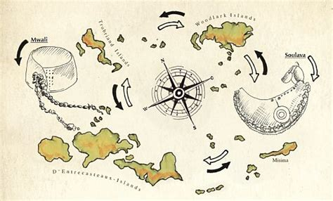

The Mathematics of Loyalty
Kula ring
Humans since the dawn of early intelligence have operated or retaliated through relationships derived from reoccurring experiences. The measure of how frequent, and how positive or negative interactions are, shape what we call trust between parties of any relationship, which function constructively through reciprocity.

Take the Kula ring1 of the Trobriand islands as example, a ceremonial exchange system where shell necklaces (Soulava) travel clockwise and shell armbands (Mwali) move counterclockwise through an archipelago of island communities in the Solomon sea. The objects themselves hold little utilitarian value; their worth lies entirely in the relationships they represent. A chief who receives a Soulava is expected to reciprocate with a recipient of a Mwali - not immediately, but eventually. The delay is crucial. It creates obligation, builds anticipation, and tests commitment over time.
The system only functions because participants trust that gifts given today will be reciprocated months or years hence. What the Kula ring demonstrates is that loyalty and trust are not instantaneous - they are accumulated through repeated cycles, weighted by time. A trading partner who has participated faithfully for decades carries far more social capital than one that hasn’t. The system inherently recognises that time, weight and history matter, and yet, many would argue “trust” cannot be quantified.
Modelling trust
If we are to identify the core pillars of what constitutes trust ($T$) it would equate to: magnitude ($M$) the positive or negative social impact an interaction has on a recipient, interactions ($n$) the total number of trust-affecting events since acquaintance.
\[S = \sum_{i=1}^{n} M_i \tag{1}\]Not forgetting time ($t$) the duration since acquaintance. Using algebraic arithmetic, this gives us the equation:
\[T = S t\]Let’s apply these formulas to a grounded physical context to see how we can model trust:
A friend you have known for 2 months in which you have had 5 positive interactions so far (meeting, hanging out, they lent you money, etc) with varying positive magnitudes of $M = 6, 6, 8, 5, 7$. Time is treated as a ratio of annuity.
- $T = t \cdot \sum_{i=1}^{n} M_i$
- $T = 0.17 \times (6 + 6 + 8 + 5 + 7)$
- $T = 5.44$
Now they ask you for a loan, you comply and you lend them the money, resulting in them repaying you on time.
- Magnitude of honoring trust:
- $M_{new} = +7$
- Projected trust impact:
- $\Delta T = M_{new} \times T_{current} \times t$
- $\Delta T = (+7) \times 5.44 \times 0.17 = +6.47$
- New total trust:
- $T_{new} = T + \Delta T$
- $T_{new} = 5.44 + 6.47 = 11.91$
The trust more than doubles (119% increase) as the relationship is young with modest accumulated trust, this significant positive action has a meaningful but proportionate impact. The friendship is strengthened substantially, establishing a foundation for future interactions.
Corporate governance
When shareholders vote on company decisions, they are exercising power over an entity built through years of collective effort, customer relationships, and operational history. Yet our current system treats all votes identical regardless of whether the shareholder bought yesterday or has held for decades. A hedge fund that purchased shares last week has the same voting power per share as a pension fund that has held for twenty years - despite having radically different exposure profiles to their financial decisions. This is the mathematical flaw at the heart of plutocracy - it ignores time.
The defects trickle down even to aspects such as remuneration, organisational function and commitment is secondary to the short term quarterly and annual earnings reports when the public market’s interests are prioritised. A scenario that played out at General Electronics (GE) back in 2010, where since 1987 their pension program was entirely funded by employees and contributed billions to their bottom line margin, yet CEO Jeffrey Immelt claimed it was a “drag” to the company’s fiscal operations. A comment that followed ending the defined benefit plan for employees in 2012, instead replaced with 401k compensation. GE then continued to spend up to 40 billion dollars up until 2020 on stock buybacks in an attempt to increase their financials to be attractive to the general market, all while company executives received increased pay and stock. By 2018 pensions were underfunded by a factor of 22.3 billion dollars, the largest deficit in the S&P 500. Whether you served for over three decades at the company is not relevant, whether you have managed your life around these promised incentives is not relevant, whether you were allocated shares and held is not relevant. Only the short sighted preference of the public market is.
Therefore, how could we factor for loyalty in a capital-weighted system?
Prior attempts in this domain simply leave time-weighting unbounded and uncompetitive2 simply introducing the factor of time itself is not enough. This approach creates what we call “entrenchment” where if time-weight is purely linear, the competitive gap is zero because of first mover advantage. Like human relationships as modeled in equation (1), shareholders should be given a degree of authority from simply being present and allocating their stake towards a dedicated function, as they already do through idle inventory. Although that is where it is troublesome to treat public markets and governance asset demographics equally. The latter being when shares or votes are committed towards the organisation’s function, the former for provisioning shares for an economic incentive. One of the major defects of plutocracy is the ambiguity of voting power, simply due to the accessibility and continuous nature of market liquidity.
History of voting theory
Many dismiss the roots of which voting theory was formalised and applied in societal politics, yet it’s an important angle that helps understand the flaws of weighted voting and dynamics of collective decision-making when choreographed incorrectly. In 1946, Lionel Penrose proposed a new method for voting demoted as the square-root method, unfortunately to not much reception although its inception marked a turning point; saturating concentrations in power but respecting broad representation. It wasn’t until 1954 when Penrose’s theory would be validated further, when the Noble prize winner Lloyd Shapley and Martin Shubik theorised a metric to quantify the influence of voting power through combinatorial and probabilistic methods. Known as the Shapley-Shubik index3 it changed how we can understanding voting power and influence in any governing system, its first real thought-provoking application was an analysis regarding the UN security council4, Shapley and Shubik showed how the US veto clause effectively disenfranchised all members states.

In what is now clearly a pivotal point in time when it comes to game theory and politics, consumer advocate John F. Banzhaf III was inspired by the work of Lloyd and co, upon realising the skew of power when it came to Nassau county board governance. Instead of accusations, used cold cut mathematics through devising the Banzhaf power index5 to prove the disparity in representation of member townships due to weighted vote scoring. This followed by perusing legal action against the board, which in 1991 was deemed successful enacting remodeling of the county’s governance to a more democratic and egalitarian one-member one-vote model.
Fast forward to the 21st century and there has been a reignition in voting inspired from the foundations of the square-root method proposed by Penrose and validated by Shapley thus inspired Banzhaf. Yet more commonly acclaimed being derived from the mechanism design work of the “point-purchase” system in 1979 by Hylland and Zeckhauser and the optimal voting rules proposed Ledyard and Palfrey in 1994. Quadratic Voting (QV) proposed by Weyl and Posner in 2017, uses the square-root function to replicate a “quadratic” cost in multi-balloted voting systems. It’s only flaw is the need for Sybil protection, as it ultimately fails from the exponential advantage from what is called a splitting attack6. Much is the reason why it has failed to be integral to capital markets and has shown more function in democratic settings, such as in the case of Taiwan’s digital ministry running pilots for budget ballots in 2018 further validating the benefits of the square root method in voting theory.
Polycentrism
Looking back at Kula ring and comparing it to corporate governance, the ancient exchange system had multiple degrees of authority such as time and commitment (accumulated through reciprocity; gifts, trading, marital agreements etc), whereas shareholder governance only has capital to equate to power. In 1951 Micheal Polanyi theorised the thesis of polycentrism; which is defined as cooperative bodies with multiple nodes or groups of authority. On the contrary to monocentrism, where there is only one.
Plutocracy’s intent was always polycentrism but often falls ill to the strifes of capitalism that it never achieves a flat organisational structure and usually conforms to a traditional hierarchy. The Kula ring is inherently polycentric not only because of the multiple degrees a participant must enact to gain authority but because the system is governed and established by the dozen of archipelago chiefs, no single actor has complete control or can shift the dynamics of the system alone.
What if time itself determines the balance between quadratic and linear weighting?
This is exactly the basis behind a new model for shareholder governance we designed denoted Polycentric voting, where the time is introduced as an additional domain for authority past capital.
Following in precedent to the flaws of past attempts, we introduce the concept of effective time weight; a capital-weighted time metric, resulting in dynamics where the time weight is rebalanced on subsequent deposits and preserved on reductions.
In aspiration of saturating concentration of power without tenure, we introduce a novel weighting mechanism; a composite weight composed of “quadratic” and linear ruling that deviates with time to purely linear, labelled by what we call the power ratio.
Collectivism
For things to improve there must be collective thought and action, if all stayed quiet neither would change, focal acts as the centre of action and thought in the digital era.
Expect further commentary and publications, support us at ops@focal.org